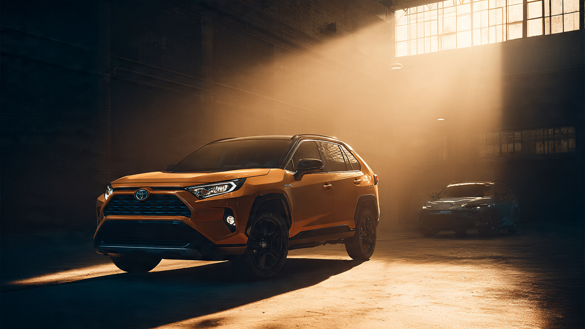

The RAV4 Has a 0.19 Death Rate. The Corolla It Replaced? 1.85.

Nobody writes odes to the Toyota RAV4. No enthusiast has a poster of one on their wall. And according to FARS data from 2014 through 2023, it has an estimated fatality rate of 0.19 deaths per 100 million vehicle miles traveled.[1] That puts a $30,000 appliance in the company of $80,000 luxury SUVs.
Compare it to the Corolla it has been steadily replacing in American driveways. Corolla rate: 1.85. Both Toyotas. Nearly identical impairment profiles (14.3% vs 14.4% alcohol-positive in fatal crashes).[1] Same buyers. A 9.7-fold difference in dying.
And the RAV4 embarrasses its own class. Honda CR-V: 0.53 (2.8x higher). Ford Escape: 0.95 (5x). Chevy Equinox: 0.36 (1.9x). Only the Mazda CX-5 at 0.12 beats it, on roughly one-fifth the fleet size and far fewer data points.[1][2]
Run the math on what happens as Americans abandon sedans for crossovers. Corolla annual deaths: ~494.5. At the RAV4's rate, projected deaths for an equivalent fleet: ~50.8. That gap represents roughly 444 fewer deaths per year from one model swap. Add Camry owners moving to Highlanders (rate 0.42 vs. 2.03): another 502. Accord drivers switching to Pilots (0.29 vs. 3.07): 643 more.[1][3] Three model swaps. Approximately 1,589 lives per year.
Before anyone celebrates, consider fleet age composition. Average RAV4 on American roads is younger than the average Corolla, because RAV4 sales accelerated after 2017 while Corolla sales declined. Newer vehicles carry better safety tech. FARS accumulates deaths across all model years still on the road, so a fleet skewed toward 2008 Corollas will always look worse than one dominated by 2020 RAV4s.[2] Some of this advantage is real engineering. Some is recency. FARS cannot separate the two.
Additionally, IIHS research shows heavier vehicles protect their occupants partly at the expense of the other car in a collision.[4] At 3,600 pounds vs. the Corolla's 2,900, the RAV4 may be transferring risk outward. FARS tracks total deaths, not fault. And it only records fatalities, not injuries. VMT estimates from the National Household Travel Survey carry ±15% uncertainty per model.[5]
Even halving the RAV4's advantage for fleet age, it remains dramatically safer than the sedan it replaces. Nobody designed the crossover boom as a public health intervention. FARS data says it's functioning as one. 914 deaths across a decade, in a fleet of nearly four million. Boring saves lives. Toyota just forgot to put that in the brochure.
Sources & References
- NHTSA, Fatality Analysis Reporting System (FARS), 2014–2023. nhtsa.gov
- IIHS, Fatality Statistics: Passenger Vehicle Occupants. iihs.org
- IIHS, Vehicle Size and Weight. iihs.org
- IIHS, Vehicle Size and Weight: Crash compatibility. iihs.org
- NHTS, National Household Travel Survey. nhts.ornl.gov